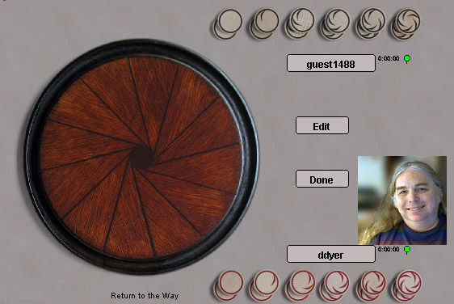

Qyshinsu
Qyshinsu is an unusual game played on a circular board. The
essence of the game is that your most recent more severely restricts
your opponent's next move, which results in mind-twisting feedback as
you play..
The publisher casts the game as a pseudo-mustical oriental mystery with
a long tradition, but don't be fooled, only amused. This game is
brand new, very well thought out, and very different.
You can read the details in the rules,
but briefly; the pieces (called stones)
are numbered 1 through 5, plus the 0 known as the "old stone". If
the most recent move is numbered N, the next move must be played N spaces distant around the
circle. The goal is to create a situation where your
opponent has no legal moves.
Robots: The robots
really kick ass, due to the narrow/deep nature of the search space.
|

|